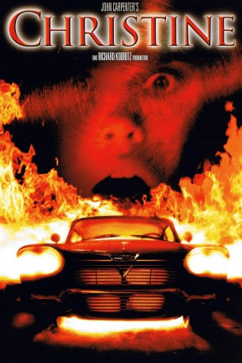
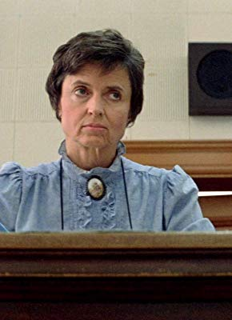

#1061 Christine
 
 IMDB-Wertung: 6.7 / 10
IMDB-Wertung: 6.7 / 10  Metascore: 57
Metascore: 57 
Ihre üppigen Rundungen provozieren begehrliche Blicke. Ihre knallrote Farbe signalisiert Sex. Sie hört auf den Namen Christine - und sie hat den Teufel im Chassis. Sie gehorcht nur dem, den sie in ihr kaltes Blechherz geschlossen hat. Und wehe denen, die sich ihr in den Weg stellen. Arnie, kurzsichtig und verklemmt, liebt nur seinen 58er Plymouth Fury - seine Christine - und sie macht aus ihm einen arroganten Schnösel. Eine Kette unerklärlicher Todesfälle ruft bald die Polizei auf den Plan. Doch erst Dennis und Leigh erkennen, daß Christine hinter allem steckt. Werden sie Christine zur Strecke bringen oder ist Christine schneller?
Jahr: 1983
Dauer: 110 Minuten
FSK: 16
Land: USA Studio: Columbia PicturesTonspuren: DTS - ,
Untertitel: Deutsch, Englisch,
Auflösung: 1080p (1920x808) Größe: 8386 MB
Genre: Horror
Regisseur:  John Carpenter
John Carpenter
Drehbuch: Stephen King, Bill Phillips
Soundtrack: John Carpenter, Alan Howarth
Darsteller:
- Keith Gordon als Arnie Cunningham
- John Stockwell als Dennis Guilder
 Alexandra Paul als Leigh Cabot
Alexandra Paul als Leigh Cabot- Robert Prosky als Will Darnell
 Harry Dean Stanton als Detective Rudolph Junkins
Harry Dean Stanton als Detective Rudolph Junkins- Roberts Blossom als George LeBay
- David Spielberg als Mr. Casey
- Malcolm Danare als Moochie
 Kelly Preston als Roseanne
Kelly Preston als Roseanne- Bruce French als Mr. Smith
- John Madden als Himself , uncredited
- John Richard Petersen als High School Student , uncredited
- Barry Tubb als Football Player , uncredited
- Christine Belford als Regina Cunningham
- William Ostrander als Buddy Repperton
- Steven Tash als Rich
- Stuart Charno als Don Vandenberg
- Marc Poppel als Chuck
- Robert Darnell als Michael Cunningham
- Richard Collier als Pepper Boyd
- Douglas Warhit als Bemis
- Keri Montgomery als Ellie
-  Jan Burrell als Librarian
- Charlie Steak als Shoppie
 Carey Loftin als Truck Driver , uncredited
Carey Loftin als Truck Driver , uncredited- Daniel A. Lomino als Liquor Store Clerk , uncredited
- John Michael Quinn als Football Fan , uncredited
Datei: X:\Person\Stephen King\Christine (1983, FSK16, 1920x808).mkv seit 15.05.2015
Festplatte: HD Collection-7+mehr(A-Z)+Person
 Es gibt insgesamt 44 Filme in der Gruppe 'Person\Stephen King'
Es gibt insgesamt 44 Filme in der Gruppe 'Person\Stephen King'